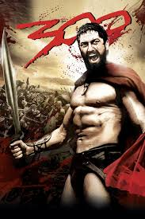

| TÍTULO | CARÁTULA | SINOPSIS | DIRECTOR | ACTORES |
|---|---|---|---|---|
| Torrente 1 | .jpg) |
José Luis Torrente, un ex-policía torpe y corrupto, que intenta desmantelar una red criminal. Con su humor absurdo y situaciones ridículas, la película retrata las desventuras cómicas del protagonista en su búsqueda de gloria. | Santiago Segura | Santiago Segura como José Luis Torrente, el protagonista, un ex policía corrupto y patético. Javier Cámara como Rafi, un joven ingenuo que se convierte en el compañero de Torrente. Neus Asensi como Amparito, la vecina de Torrente y objeto de su obsesión. Chus Lampreave como Doña Antonia, la madre de Torrente. Jimmy Barnatán como Toni, amigo de Rafi |
| Forrest Gump | .jpg) |
Narra la vida de un hombre con discapacidad intelectual que, a pesar de sus limitaciones, vive experiencias extraordinarias y se entrelaza con momentos históricos. Su amor por Jenny y su inocencia reflejan temas de amor, amistad y destino. | Robert Zemeckis | Tom Hanks como Forrest Gump, el protagonista con una vida extraordinaria. Robin Wright como Jenny Curran, el amor de la infancia de Forrest. Gary Sinise como teniente Dan Taylor, el amigo de Forrest en la guerra de Vietnam. Mykelti Williamson como Bubba, el amigo de Forrest que sueña con una empresa de camarones. Sally Field como la madre de Forrest, que lo apoya a lo largo de su vida. Christopher Jones como el joven Forrest. Michael Conner Humphreys como el joven Forrest (niño). |
| La Casa de Papel | .jpg) |
Narra el atraco a la Real Casa de la Moneda de España, liderado por el "Profesor". A medida que el plan avanza, los atracadores enfrentan tensiones internas y desafíos externos, explorando lealtad y resistencia. La serie mezcla acción y giros inesperados, convirtiéndose en un fenómeno global. | Álex Pina | Álvaro Morte como El Profesor, el cerebro detrás del plan. Úrsula Corberó como Tokio, la narradora de la historia. Pedro Alonso como Berlín, hermano del Profesor y uno de los líderes del atraco. Itziar Ituño como Raquel Murillo, inspectora de policía. Jaime Lorente como Denver, hijo de Moscú y uno de los atracadores. Esther Acebo como Mónica Gaztambide, amante de Denver. Alba Flores como Nairobi, experta en falsificación. Miguel Herrán como Río, un hacker y el interés amoroso de Tokio. Darko Peric como Helsinki y Fernando Cayo como Moscú, otros miembros del grupo. |
| El Padrino 1 | .jpg) |
Sigue a la familia Corleone, una poderosa mafia en Nueva York. Tras un atentado contra su patriarca Vito, su hijo Michael se ve obligado a entrar en el mundo criminal para proteger a la familia. La película explora temas de poder, lealtad y las consecuencias de la violencia. | Francis Ford Coppola | Marlon Brando como Vito Corleone, el patriarca de la familia. Al Pacino como Michael Corleone, el hijo menor de Vito que se convierte en su sucesor. James Caan como Sonny Corleone, el hijo mayor y mano derecha de Vito. Richard S. Castellano como Clemenza, un capo leal a la familia. Robert Duvall como Tom Hagen, el consigliere de la familia. Diane Keaton como Kay Adams, la novia y eventual esposa de Michael. Sterling Hayden como el capitán McCluskey, un policía corrupto. Abe Vigoda como Salvatore Tessio, otro capo de la familia. |
| 300 |  | Sigue al rey Leónidas y sus 300 espartanos mientras defienden Grecia contra el vasto ejército persa de Jerjes en la Batalla de las Termópilas. A pesar de ser superados en número, luchan con valentía y estrategia, convirtiéndose en un símbolo de sacrificio y resistencia heroica. | Zack Snyder | Gerard Butler como el rey Leónidas, el líder de los 300 espartanos. Lena Headey como la reina Gorgo, esposa de Leónidas. Dominic West como Theron, un político espartano corrupto. David Wenham como Dilios, un narrador y uno de los guerreros espartanos. Rodrigo Santoro como Jerjes, el dios-rey de Persia. Michael Fassbender como Stelios, un joven y valiente guerrero espartano. Andrew Tiernan como Ephialtes, el traidor que guía a los persas. |